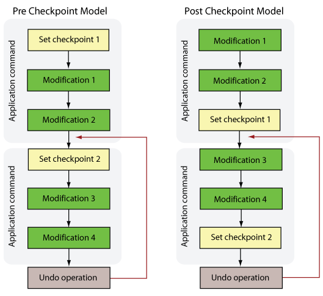
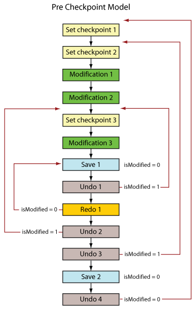

|
 |
 |
||||||
|
|
|
||||||
An interactive editing application can implement undo and redo functionality that returns a database to a previous state. OpenAccess supports undo and redo functionality for both design and technology databases.
The granularity of a change that an end user sees is typically different from the granularity of calls to the OpenAccess API. For example, a user might connect two pins as one operation in an application, but the application must make multiple function calls to complete the necessary changes. Applications need a mechanism for grouping function calls in order to support undo and redo operations for tasks that involve multiple calls. OpenAccess provides undo checkpoints for this purpose.
There are two models for working with checkpoints in OpenAccess. An application can set checkpoints before a series of changes, or after a series of changes. The following enableUndo functions specify the use model for performing undo and redo operations.
void oaDesign::enableUndo(oaBoolean value, oaUndoModelEnum undoModel); void oaTech::enableUndo(oaBoolean value, oaUndoModelEnum undoModel);
Where the undoModel argument is one of the following oaUndoModelEnum values:
Note that calling enableUndo and specifying one model, and then calling enableUndo a second time specifying a different model, causes an exeption if undo is not disabled between the first and second calls. However, calling enableUndo multiple times with the same undoModel argument is handled as a no operation (NOP). The isUndoEnabled functions are provided to check whether undo is already enabled before calling enableUndo.
The following figure contrasts the two models.

OpenAccess does not insert implicit checkpoints. After an application calls enableUndo, separate calls to oaDesign::setCp or oaTech::setCp are required to mark a checkpoint. Undo operations must match the checkpoint model. Setting a pre-checkpoint followed immediately by an undo operation, before any undo records are created, has no effect other than eliminating that checkpoint. However, setting post-checkpoint and performing an undo operation without a prior checkpoint throws an exception. This is an unlikely scenario if the post-checkpoint model illustrated in the previous figure is followed. The following list of functions set and get checkpoint IDs:
Undo operations operate on one design or technology database at a time. The application must specify which design or which tech is affected by the undo operation. If an application only allows one design to be open for editing at any given time, undo operations are unambiguous. Applications that allow editing multiple designs or techs in the same session usually support undo operations on each of the designs or techs. The application must control the information about which checkpoints and undo operations apply to which design or technology databases and must synchronize these operations.
The setCp functions support setting an explicit ID, which helps to synchronize the undo state for multiple databases. Use the getCpID functions to query the last checkpoint set. The unsetCp functions remove the last checkpoint if there are no undo records associated with that checkpoint. Otherwise, calling unsetCp when a checkpoint is not empty causes an exception. Use the getNumUndoCpRecs functions to check whether the number of undo records associated with a checkpoint are zero.
If an application needs to undo all changes in all design databases or all technology databases, checkpoint IDs can be used to syncronize changes among the databases. There is no built-in support for synchronizing changes over multiple databases used in a design. If required, the application programmer must devise conventions using checkpoint IDs to provide this support..
A database must not be edited while an undo or redo operation is in progress. OpenAccess triggers observer notifications as undo and redo modifications occur. These notifications can aid in preventing edits while undo modifications are in progress. Applications can call oaDesign::isInUndo or oaTech::isInUndo to verify whether a database is in the undo state.
Session definition objects are part of the schema definition of an application flow. These objects include oaConstraintDef, oaConstraintGroupDef, oaConstraintParamDef, oaGroupDef, oaDerivedLayerDef, and oaDerivedLayerParamDef. The only editing operation allowed on session definition objects is destroy(), but it is not possible to destroy a session definition object while an oaDesign or oaTech object refers to it. If a definition is referred and in use, destroying the definition must not be allowed.
Session definition objects also cannot be destroyed if undo is enabled on a database. When undo is enabled, it indicates that the flow is beyond the schema definition stage, and that the schema is finalized. Undo or redo operations can restore objects that refer to schema definitions. If a schema definition is destroyed, any restored objects that refer to that definition are in an invalid state. An exception is thrown if an application attempts to destroy a session definition object when a database is open and undo is enabled.
OpenAccess maintains an isModified flag, which indicates whether a database is modified but not saved. This flag is maintained correctly regardless of the number of undo or redo operations committed after a save operation.
Consider the following example, which uses the pre checkpoint model.

After the Save 1 operation, the isModified flag is 0. After the Undo 1 operation, Modification 3 is rolled back and the isModified flag becomes 1. After the Redo 1 operation, Modification 3 reappears and the database is returned to the initial saved state. The isModified flag is set to back to 0 again.
After the Undo 2 operation, Modification 3 is lost and the isModified flag is set to 1. After the Undo 3 operation, Modification 1 and Modification 2 disappear and the isModified flag becomes 1. After the Save 2 operation, the isModified flag is 0. Finally, after the Undo 4 operation, there is no change to the saved state of the database (no actions between checkpoint 1 and checkpoint 2) and the isModified flag remains 0.
Note: Undo and redo operations do not directly affect the contents of saved data. The undo and redo operations never cause a save to occur or to be undone—they affect only the state of the design or technology data in memory. Saving a design or technology database does not clear undo checkpoints.
A technology database that references other technology databases is said to form a tech graph. The tech graph represents the topology or relationships between the root technology database and the referenced databases. Attaching a database to the tech graph loads the referenced database into memory, and detaching a database from the tech graph unloads the database from memory. The oaTech::setRefs and oaTech::unsetRefs functions provide this support.
The property created when attaching or detaching a technology database to a design is not stored in either the design or technology database. It is stored as a string property in a DM database. As a result, undo functionality does not support oaTech::attach() nor oaTech::detach().
Objects in a design or technology database can refer to objects in the tech graph, and when a referenced technology database contains referenced objects, the referenced database is said to be in scope and the referenced object is bound with the referring object. Undo and redo modifications can involve calls to the setRefs and unsetRefs functions. If an undo or redo operation unsets a reference to a database containing a bound object, the object is unbound. If an undo or redo operation sets a reference to a technology database, OpenAccess attempts to bind objects that are contained in the tech graph.
oaConstraint, oaAppDef, oaGroup, and oaProp objects, and all derived objects, are supported by the undo and redo model. For example, a constraint group created by calling oaConstraintGroup::create is reverted in an undo operation by calling oaConstraintGroup::destroy. Whether setRefs or unsetRefs calls are made directly, or they occur due to undo or redo operations, the oaConstraintGroups on the root tech are refreshed by the undo and redo operations and are always current. Note that some operatons such as oaConstraintParam::copyTo might be called in one technology database and create new parameters in a different technology database. However, the oaConstraintParam::destroy called by an undo or redo operation must be triggered from the database in which the parameter was added.
There are circumstances in which data cannot be restored. For example, performing an undo operation that unsets a reference to a database might cause the database to be purged if there's no other reference to it. This can cause a loss of data if the referenced database was modified but not saved. In this case, a redo operation cannot restore the lost data.
The setRefs and unsetRefs functions are hierarchical nested operations, and OpenAccess issues observer notifications accordingly. The notifications include:
If undo or redo call the setRefs or unsetRefs functions, the observer notifications are generated as if the functions are called directly.
Conflicts are not allowed in a tech graph, and OpenAccess throws an exception if creating an object or setting attributes in a technology database creates a conflict. However, there are circumstances where conflicts are tolerated without throwing an exception. For example, if a technology database is opened that contains conflicts with the existing tech graph in memory, an observer warning is issued instead of an exception. This allows the conflicts in the database to be resolved before a reference to that database is set.
Another circumstance where conflicts are tolerated without throwing an exception is during undo and redo operations. If an undo or redo operation creates a conflict, throwing an exception would make it impossible to query which changes were reversed or restored by the interrupted operation and would make it impossible to know the exact state of the database. For this reason, undo and redo operations that restore conflicting objects or attributes trigger observer warnings instead of exceptions. The observer warnings triggered by conflicts caused by undo and redo operations must be interpreted in a manner similar to how exceptions are interpreted and must be resolved. There is no conflict checking by oaTech::save(), and both applications and users must always ensure that no conflicts exist and that the database is left in a stable state after undo and redo operations.
For applications that are not migrated to the current version of OpenAccess, the oaDesign::enableUndo functions do not accept an argument for setting the undo model. Instead, OpenAccess detects the undo model based on the function calls. For example, if an undo operation occurs immediately after an empty checkpoint (a checkpoint with no OpenAccess calls following it), OpenAccess assumes that the post-checkpoint model is in use because this scenario does not make sense for the pre-checkpoint model.
If an application is using the pre-checkpoint model, you must ensure that there are no empty checkpoints. Otherwise, the undo behavior can be confusing to end users. Applications can use unsetCp functions to remove checkpoints.
The recommendation for legacy applications is to migrate to the current version of OpenAccess and use those enableUndo functions that support specifying the undo model.

Copyright © 2001-2010 Cadence Design Systems, Inc.
All rights reserved.